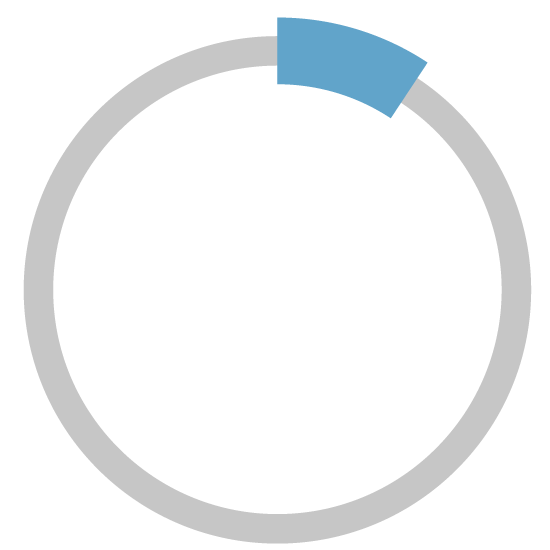

Storico
Elezioni
Menu
Home
Cerca Candidato
Cerca Partito/Lista
Il Progetto
Contatti
+
Nome Del Partito
-
2002
2006
2011
Totale voti
Partito / Lista
Voti
4.856
Percentuale
8.7%

Totale voti
per sezioni
Sezione
Voti
Percentuale
01
35
02
58
03
81
04
32
05
35
06
58
07
81
08
32
09
35
10
58
11
81
12
32
13
35
14
58
15
81
16
32
Contenuto anno 2006...
Contenuto anno 2011...